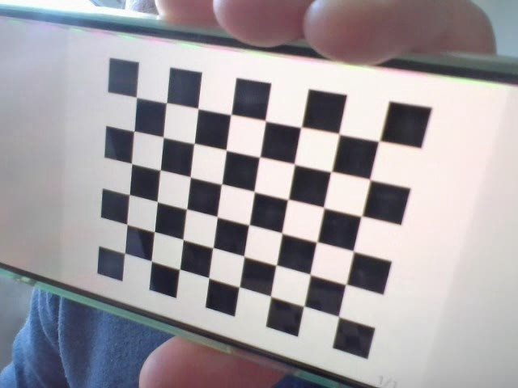
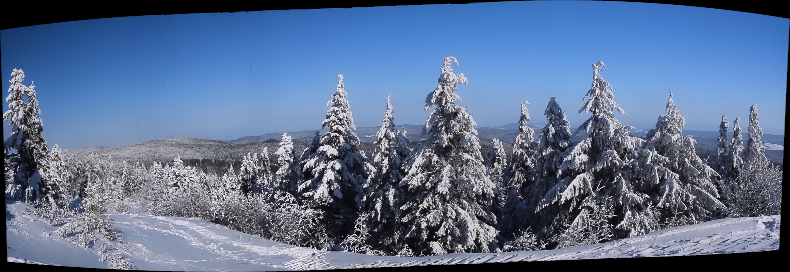
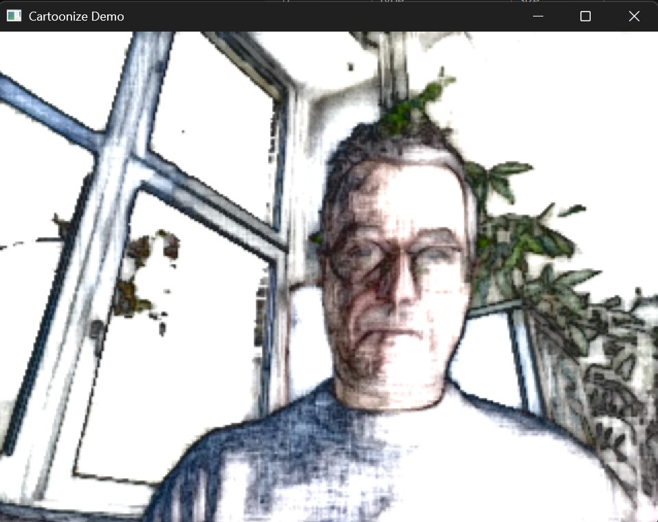

The projects in this section explore traditional computer vision techniques that rely on established mathematical models and algorithmic approaches rather than deep learning.
The are built on the basic methods such as feature extraction, image processing, geometric transformations, and statistical pattern recognition. Forming the foundation
of computer vision, enabling robust and interpretable solutions these do not need extensive data-driven training.

This is a real-time video processing application designed to calibrate cameras using chessboard patterns.
It extracts calibration frames, detects chessboard corners, and computes the camera matrix and distortion coefficients to improve
image accuracy, implemented using OpenCV in
python.Go to Page

Demonstrates image stitching using video frame extraction. It captures frames from a video stream, processes and stitches them
together. Can be used to create a panaroma image or an environment map as well as classic stitching. Implemented using OpenCV in
python.Go to Page

The application applies various stylization effects to video frames in real-time, leveraging OpenCV's
advanced image processing capabilities. Users can switch between different stylization modes interactively
during the demo. The supported effects include but not limited to edge-preserving filter, detail enhancement,
grayscale and colorful pencil sketch. Implemented using OpenCV in
python.Go to Page